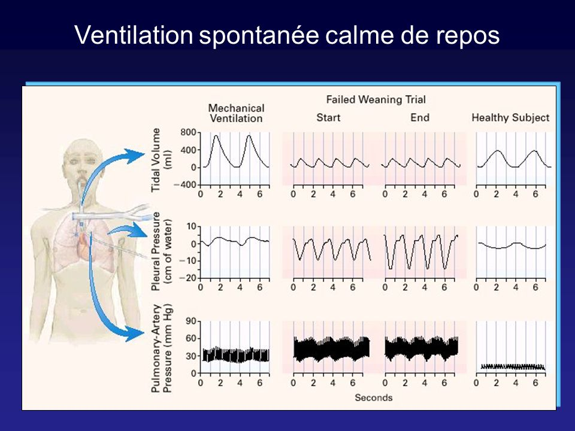
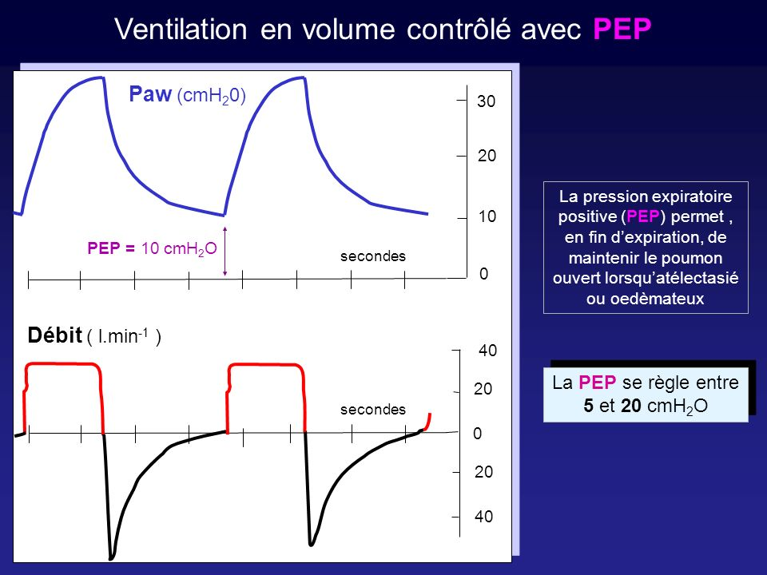
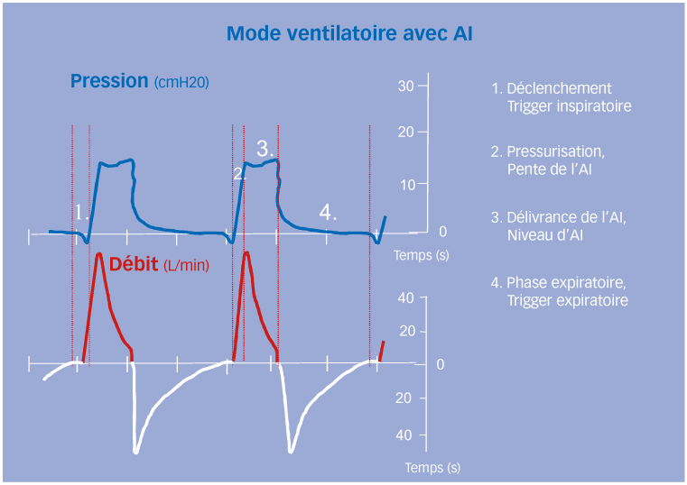
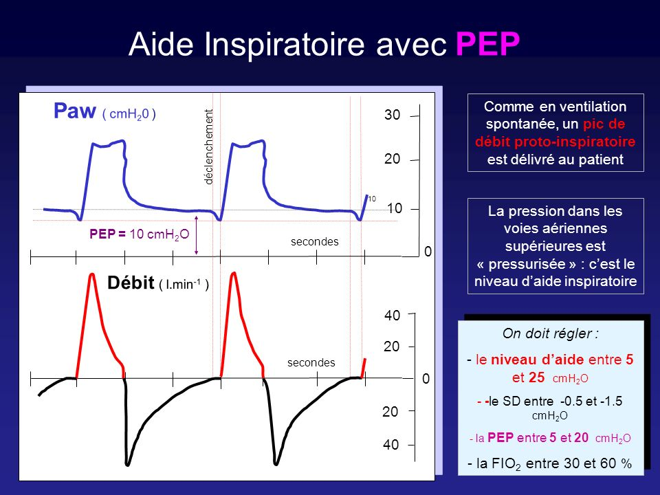
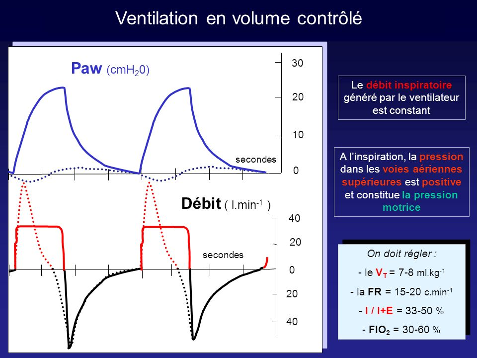
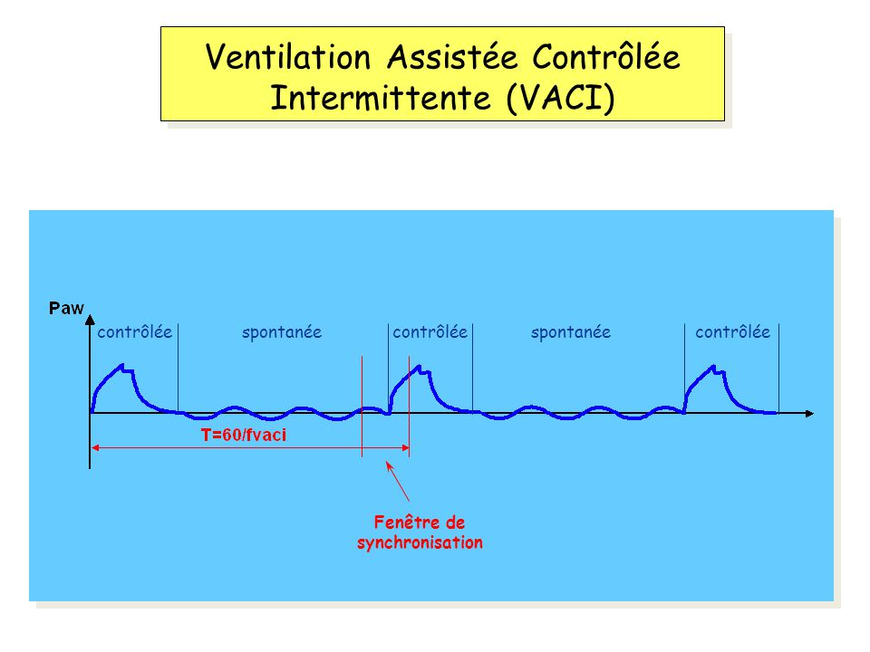
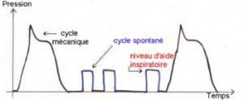
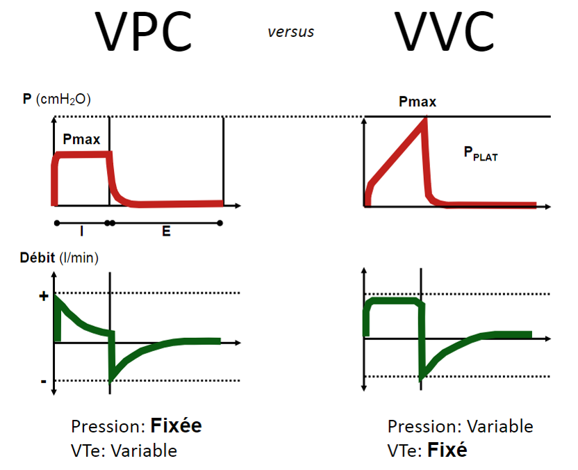
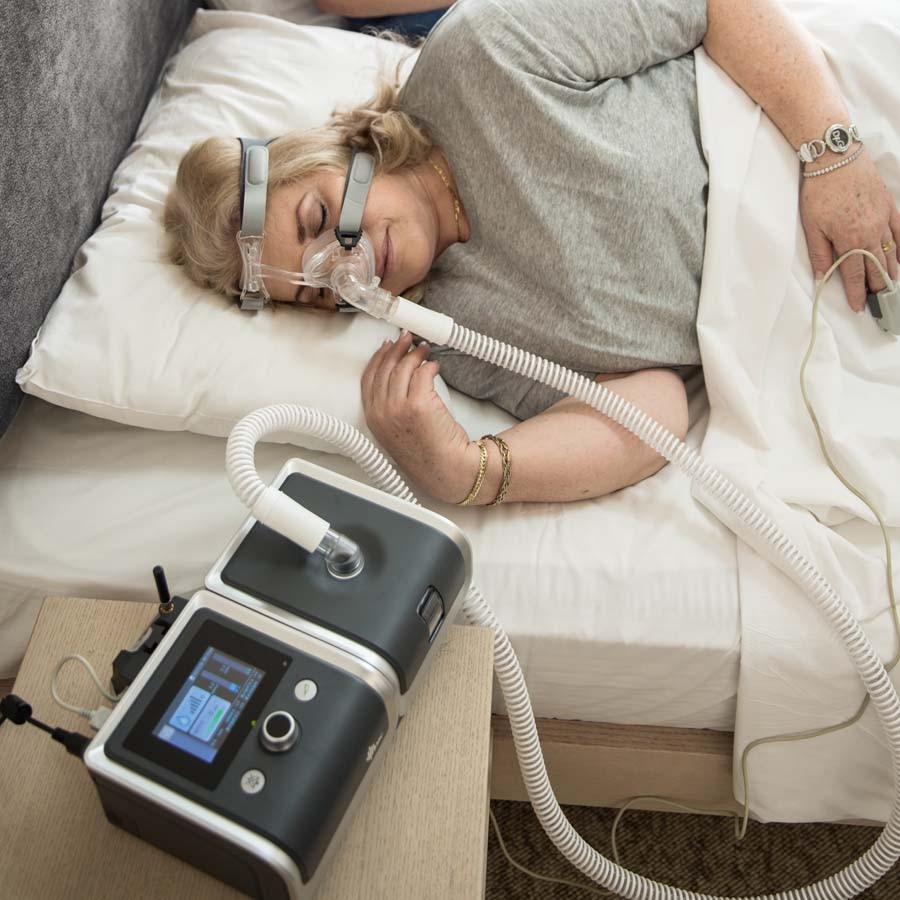
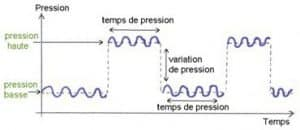

Bienvenue Sur Medical Education
La ventilation artificielle : les modes ventilatoires
La ventilation spontanee : VS
Lors de la ventilation spontanee (VS), la pression intra-pulmonaire est successivement negative lors de l'inspiration, puis positive lors de l'expiration.
Lors de la ventilation artificielle, cette pression reste indifferemment positive que l'on soit en phase inspiratoire ou expiratoire : la pression moyenne est donc plus importante.

La ventilation spontanee a pression positive : VS-PEP ou CPAP
La ventilation spontanee en pression positive (VS-PEP ou CPAP) est l'association d'une ventilation spontanee (VS) et d'une pression expiratoire positive continue (PEP).
Puisque le patient contrele completement sa ventilation, on ne peut pas contreler la frequence, la duree du temps inspiratoire, ni les volumes courants. Il faut donc les surveiller.

La ventilation spontanee a aide inspiratoire : VS-AI
La ventilation spontanee a aide inspiratoire (VS-AI) est l'association d'une ventilation spontanee (VS) et d'une aide inspiratoire (AI). Il s'agit d'une assistance en pression a la ventilation spontanee du patient. Lorsque le respirateur reconnaet que le patient est en train de debuter un effort inspiratoire, un cycle respiratoire est enclenche par la machine.
La reconnaissance d'un effort inspiratoire du patient par un trigger declenche l'insufflation d'une pression pre-reglee qui s'arrete a la fin de l'effort.
Puisque le patient contrele completement sa ventilation, on ne peut pas contreler la frequence, la duree du temps inspiratoire, ni les volumes courants. Il faut donc les surveiller.

La ventilation spontanee a aide inspiratoire et a pression positive : VS-AI-PEP
La ventilation spontanee a aide inspiratoire et pression positive (VS-AI-PEP) est l'association d'une ventilation spontanee (VS), d'une aide inspiratoire (AI) et d'une pression expiratoire positive (PEP).
Il s'agit d'une ventilation spontanee a aide inspiratoire (VS-AI) associe a une pression positive expiratoire (PEP).

La ventilation en volume contrele (VC) est l'insufflation d'un volume courant pre-regle a une frequence imposee, jusqu'e atteinte du volume fixe.

Le volume assiste contrele : VAC
La ventilation en volume assiste contrele (VAC) est l'insufflation d'un volume courant pre-regle a une frequence imposee (VC), avec la possibilite pour le patient de declencher des cycles respiratoires de volumes identiques a l'aide d'un trigger : il peut augmenter la frequence mais le volume insuffle est impose.
En cas d'arret respiratoire ou d'un effort inspiratoire insuffisant, le respirateur initie des cycles contreles pour assurer une ventilation minimale. Les cycles respiratoires delivres par le respirateur lors de l'effort inspiratoire du patient ont les memes proprietes (volume ou pression, FiO2, I/E) que les cycles contreles.

Le volume assiste contrele intermittent : VACI
La ventilation en volume assiste contrele intermittente (VACI) est l'insufflation d'un volume courant pre-regle a une frequence imposee (VC), avec la possibilite pour le patient d'intercaler des cycles spontanees (VS) entre les cycles imposes du respirateur. Le respirateur va synchroniser ses cycles mecaniques a la ventilation spontanee du patient.
En cas d'arret respiratoire ou d'un effort inspiratoire insuffisant, le respirateur initie des cycles contreles pour assurer une ventilation minimale.

Le volume assiste contrele intermittent a aide inspiratoire : VACI-AI
La ventilation en volume assiste contrele intermittente a aide inspiratoire (VACI) est l'insufflation d'un volume courant pre-regle a une frequence imposee (VC), avec la possibilite pour le patient d'intercaler des cycles spontanees (VS) assistes par une pression d'aide inspiratoire (AI) entre les cycles imposes du respirateur. Le respirateur va synchroniser ses cycles mecaniques a la ventilation spontanee du patient.
En cas d'arret respiratoire ou d'un effort inspiratoire insuffisant, le respirateur initie des cycles contreles pour assurer une ventilation minimale.

Le volume contrele a regulation de pression : VCRP
La ventilation contrelee a regulation de pression (VCRP) est l'insufflation d'un volume courant pre-regle, jusqu'e atteinte du volume fixe et a une frequence imposee, avec une regulation du respirateur qui va adapter sa faeon de delivrer les volumes afin que ceux-ci engendrent le moins de pression possible au niveau du poumon. Ce mode evite ainsi le barotraumatisme.
La ventilation en pression contrelee (PC) est l'insufflation a une frequence donne, d'une pression pre-reglee jusqu'e l'atteinte de la pression fixee, avec maintien du niveau de pression jusqu'e la fin de l'insufflation.

La pression assistee contrelee : PAC
La ventilation en pression assistee contrelee (PAC) est l'insufflation d'une pression regulee en fonction d'un volume souhaite et calculer par le respirateur (VC), avec la possibilite pour le patient de declencher des cycles respiratoires identiques a duree limitee par le respirateur.
La pression assitee contrelee intermittente : PACI
La ventilation en pression assiste contrele intermittente (PACI) est l'insufflation d'une pression e une frequence qui sont eux deux predeterminees (PC) et synchronisees sur les inspirations du patient. Le patient a la possibilite d'intercaler des cycles spontanees (VS) entre les cycles imposes du ventilateur.
La ventilation en pression positive biphasique : BIPAP
La ventilation en pression positive biphasique (BIPAP : Bilevel Positive Airway Pressure) est l'association d'une ventilation spontanee (VS) et d'une pression expiratoire positive (PEP) avec variation de la pression positive : la pression est alternee, elle est a deux niveaux de pression : biphasique.
La variation de pression et les cycles spontanes s'il y en a (efforts inspiratoires et debuts d'expirations) sont synchronises greces a des triggers inspiratoires et expiratoires

La ventilation en pression positive biphasique assitee en pression : BIPAP-VACI ou BIPAP-AI
La ventilation en pression positive biphasique assitee en pression (BIPAP-VACI ou BIPAP-AI) est l'association d'une ventilation spontanee (VS) assiste en pression a l'aide d'une aide inspiratoire (AI) et d'une pression expiratoire positive (PEP) avec variation de la pression positive : la pression est alternee, elle est a deux niveaux de pression : biphasique.
- Le patient a la possibilite de ventiler spontanement, y compris pendant la duree du cycle machine.
- En l'absence d'une ventilation spontanee du patient, les reglages du respirateur correspondent a une ventilation en pression contrelee classique.
La variation de pression et les cycles spontanes s'il y en a (efforts inspiratoires et debuts d'expirations) sont synchronises greces a des triggers inspiratoires et expiratoires
